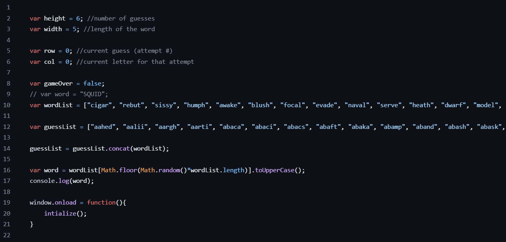

Adding functionality with JavaScript
The functionality of the Wordle JavaScript game will include the following main components:
1. Secret word generation: To start the game, the computer must generate a random a secret word from a predefined list of words. This can be implemented using an array of words and generating a random index.
2. User Input: The player should be able to enter their assumptions about the secret the word. You can use an input field or a dialog box to do this.
3. Validation of user input: The computer must check the word entered by the user and report its correctness. To do this, you can compare each letter of the entered word with the letters the secret word and compare their position and meaning.
4. Limit the number of attempts: The player should be given a limited number of attempts to guessing the secret word. The number of attempts can be represented as a counter and automatically decrease with each new attempt.
5. Displaying the results: On each attempt, the computer must display the result of the player's guessing, for example, the number of guessed letters in the correct positions and the number of guessed letters in the incorrect positions. You can also display the player's previous attempts.
6. The condition of victory or defeat: When the player guesses the secret word or the number of attempts is exhausted, the game must end and show the appropriate result — victory or defeat.
7. The opportunity to start a new game: After the end of the game, the player should be given the opportunity to start a new one A game with a new secret word and the number of attempts.
The Wordle functionality described above in JavaScript must be implemented using the appropriate commands and the conditions for the game to work correctly and provide the user with a user-friendly interface for the game.